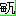

以下は、主に jekto.vatimeliju の手による燐字進捗振り返りログである。前スレは lin-marn.html である。
2022年後半～2023年前半にわたって、燐字などにまつわる進捗をここの HTML として一般公開する手間をサボっていた。
ということで、それをしっかり振り返るための場所がこの lin-marn2.html である。
lin-marn.html は「1.」「2.」など順番に更新していくのが基本方針であったが、振り返るべきことが増えてきた今や、時系列で整理することなど半分あきらめ、とりあえず反映すべきものを見つけ次第どんどんさらっていって書いていくことを目標とする。
現在 2023 年 10 月 1 日。ところで、composition.txt の最終更新が2022 年9月4日なので、一年以上まともなメンテをしていなかったことになる。
この 1 年の間、燐字やパイグ語に関しては結構な進捗があったが、それを全然まとめ上げてこなかったということになる。
ということで、そのための大・振り返り作業が必要になる。さて、いまちょうど 256. まで書いてキリがよいので、某匿名掲示板よろしく、一旦別の HTML ファイルに切ってから作業を行おうと思う。
2023年9月18日の linzi_image_table_narrow 更新時に SY に対して「SY 手書き文字、残り 44 件ほしい」と伝えたところ、SY が書いてくれた。やったぁ。

ということで、（えーと第何回だ）
「燐字表示17」フォルダに「2021年9月4日」って書いてあるってことは、第17回って実に 2 年前？ マジ？？？
ということで、第18回燐字書き取りの画像分割＆収録をやっていく。いやぁマジで久しぶりだな。
分割をする。今回 SY は【寒】を書き忘れ、【囁】をもう一度書いてくれたので、結果としてできた画像はこの通り。
【囁体遊怖万胸頬呉待檸叫鶏決引汪哦榎株織村犛牲溜泉玉叉飛鍋蟲矢玄慥釘槌妙涙悖順嗚黍乾湿搾窄】
さて、超ひさびさにマニュアルを開き、何をやるべきかを確認していく。
これマニュアルもちょっと古いな…… image_existence_table.ts の更新部分の説明が不十分。ちょっとマニュアル直すか。てか meloviliju が補足残してくれているな。
とりあえず、tsc まで終わったのでコミットする。
よし、追加し終わった。ちゃんと table_narrow の SY 手書きが「残り 1 字」になったぞ。
えーと、「燐字書き取りのリンクを書き換える」？
あ～『「第k(≧15)回燐字書き取り」燐字と原稿用紙』ってやつかぁ。あったねそんなの。
まあ、一応直しておいてあげるかぁ。
そして to_linzi_image.html の表も書き換えが必要。やりましょう。
さらに Spoonfed Pekzep へとコピーしておかないとね。コピーした。
2023年9月19日の午前4時ごろ、以下のような話がされた。
れもん「あー iam1 そもそももう口の意味であまり使わないのか」 SY「現代パイグ語だともはや『顔の口』って言いそうだなぁ」 hsjoihs「四音節制約があるので、『口を開けてください』は【心開下口】でできるが、ここに【真】とかが加わると【心真開下顔口】にする必要が出るのではなかろうか」 SY「【真心】の語順の方が言いそうだが、作用域が違うから差が出るのかなぁ。『真剣に口を開けてください』vs. 『口を開けてほしいと私は真剣に思っています』」 hsjoihs「じゃあ【心常開下顔口】の方が差が明確化できて例文として上手いかな」 hsjoihs「ところで【顔】は転写を予約していて造字済みですらあるので、あとは音さえ作れば立てることができますよ」 SY「最近乱択が多かったので、たまには同根語で作りますか」 hsjoihs「そういや『頭』って通言語的に名称が変わりやすいらしいですね」 https://twitter.com/Mitchara/status/967026410081615873 > @asaokitan ロマンス語でもそうですが、頭は身体部位の中で性器と並んで名称が変わりやすいんですよね。なぜかはわかりませんが、たしかSihlerの歴史言語学の教科書にそんな指摘がありました。 > 2018/02/23 22:20 hsjoihs「sania.ar『顔』と sanuka.ar『姿』の間に関係を見ていく手があるかもしれん」 SY「ほかに san- で始まるのどういうのがあります？」 hsjoihs「sanati『黒肌』、sanusu『オレンジ肌』というエントリーがある。こいつらを無批判に採用するかはともかくとして、san- からなる肌方面の複合語がある可能性はある」 SY「son1【前】と関係したりしません？」 hsjoihs「ありそう～」 SY「*saunu 方面を仮定するといけそう」 hsjoihs「いずれにせよ san(0|1|2) か？」 SY「まあそれを取るのならそうかも。son1 と結びつけるなら原義側が『顔』かな」 SY「鼻音韻尾だし 0 にはなりにくそう。son1 との同根性を見たいなら 1 声かなぁ」 hsjoihs「古牌が反り舌ではないと言っているので、san1 で行きますか」 SY「【顔】、どこまで指せるんですかね。困りそうですね」
ということで、【顔】に san1 という字音がついた。これに対し、meloviliju は「san- + pogo > sabogo 顔色とかできるかも？」と同日の昼に提案した。
さて、これを正式に登録する作業がずっと先送りにされていた。2023年11月3日に行われた「同志社語学同好会アジト パイグ語」で
として【顔口】という語が明示的に紹介されたので、2023年11月4日現在、jekto.vatimeliju はついにその登録作業をやっていくこととした。さてマニュアルを見るぞ。
2023年11月6日、Spoonfed Pekzep に文字用のページを作って、そこに以下のような（https://zi.tools を参考にした）字素への分解を載せるということを考えた。
ところで、composition.txt は造字原理に基づいておらず、字の構成をプレーンテキストで書き表すために無理やり書いている節がある。
これでは字について解説するという目的を果たせないので、より字の成り立ちに沿った分解を、「じげん」シートを参考にしつつ整備すべき、という問題意識が生まれた。
00:58 には作業場所の Google Spreadsheet が定まり、04:30 に完成した。
今のところ、Spoonfed Pekzep リポジトリの raw/linzklar-dismantling.tsv を正本としておくが、これを管理する責務は Spoonfed 側ではないだろうという気もするので移管するかもしれない。
以上の話を書き残す必要性を2023年11月20日に感じたので、書いている。マニュアルにも加筆しておいた。
2023年11月20日、jekto.vatimelijuが「またもや不足分のビットマップを組んだのでご意見いただくか」と提示。
それに対し、たもとさんが「【⿰心字】の左側が浮いている印象を受けたので下に降ろしてみました」として を提示。「残り2つはそのまま使えそうに見えます」とした。
を提示。「残り2つはそのまま使えそうに見えます」とした。
skarsna.meloviliju が「たもとさんに同意です」、FengNegiさん / 雪琴声(let1 lia1 cuop2) が「たもとさんの意見に同意します」とのことだったので、これで行こうと思う。
「231. 【癒】」から引用すると、
パイグ語一言語教材が書かれ始め、それに関してこのような会話が成された。
SY「人々を助ける職業名を入れたい。医者って言いたいんだよな」 j.v「いま造語しよう！｝ SY「形態素としてあるんかな？」 SY「『薬』系統になる可能性がある」 j.v「ナワトルは全て『薬草』tepahtli で言ったはず」 SY「【癒】、作りましょう」 SY「『癒す』『治癒する』『なぐさめる』辺りを」 j.v「韻図乱択からアイル逆算しますか」 乱択：声母【来】/zr/ 韻母：【地】 /əp/ ----------------------- SY「【癒】sep2」
とある。
この会話が行われたのは 2022年8月12日のことであって、その 6 日後の 2022年8月18日には skurlavenija.mavija (みっとん) によって次のような造字提案がされていた。
まい/MIT — 2022/08/18 01:13meloviliju — 2022/08/18 01:17 これかなり字として存在しそうなんだけど【癒】とは別字な感じもちょっとする SY — 2022/08/18 10:38 良さそうな気もするけどなあ
時は 1 年以上流れ、2023年8月22日。
BS朝日のテレビ番組「脳内ワンダーランド」に出場するにあたり、【癒】の字形が本格的に必要となったので、決めていくこととなった。
SY — 2023/08/22 20:58 @よくいる人 〔急募〕【癒】の字形 hsjoihs — 2023/08/22 20:58 なるほどね meloviliju — 2023/08/22 22:14 【⿱⿰筆筆傷】治療の象形 hsjoihs — 2023/08/22 22:15 やはり【手】と【傷】周りの字形になるわよね meloviliju — 2023/08/22 22:15 略して筆四はかなりアリかも hsjoihs — 2023/08/22 22:15 > まい/MIT — 2022/08/18 01:09 > 造字形案: 【癒】=【⿱傷手】 >
ということで、【癒】=【⿱傷手】が最終確定し、番組制作側にはこのような画像を提出した。

番組はこのような形となったが、

この左下に映っている小道具が旅行ハンドブックになっており、中にはこのように会話フレーズ集がまとめられていた。

ということで、【癒】=【⿱傷手】に立派な運用実績ができたので、登録作業をしなくてはいけない。
字の構成原理は「形集之字：【傷】に【手】をあてている様子で治療を描写する。」と説明すべきだろう。
Spoonfed の dismantling にも登録。
久々に defined_but_no_image_prepared 欄を使ったな。さて画像を作らねば。

リパライン語 teri「バス」の借用 tei1 を表す字。
「パイグ語・古パイグ・燐字などについて考察する」の「96. 『杯』と『叮』」にあるから、2020年8月に立案されたやつということになる。歴史が長い。
hsjoihs — 2023/09/03 16:41 @よくいる人 パイグ語話者にとって完璧な keyboard instrument の「正解」を釣り上げたのでご報告します 漢字転写：（terpstra keyboard へのリンク） ラテン字転写：（terpstra keyboard へのリンク）SY — 2023/09/03 17:19 エンハーモニック鍵盤？ hsjoihs — 2023/09/03 17:22 ですね。で、ユンカーとユナフラの不協和ペア（現世で言うトライトーン）が「音素逆順、声調逆」
SY — 2023/09/03 17:24 あー hsjoihs — 2023/09/03 17:40 霊感: nu2 は病気の名前だが、稀字だし縁起悪いしで ne2【猫】か lu2【新】で書かれがち te1 は木の名前だが、これまた僻字なので tei1【叮】（バス）で書かれがち hsjoihs — 2023/09/03 18:23 すでに pa2【犬】があるので ne2 の相性がいいHarmy e chypo dyrilの類のやつなので、諸詩ですね。要約すると「楽器の12個の音をユンカーとユナフラが6つずつ奪い合ったので、ユンカーの第一の音はユナフラの第一の音と喧嘩し、第二の音は第二の音と喧嘩する」
— 【ゲムマ両サ-19】hsjoihs (はすじょい) @ 言語が好き (@sosoBOTpi) March 7, 2019
ということで、音楽の方面でも【叮】の字を使う需要が発生した。
春豊席 — 2023/11/19 19:30 @識清之人 グリフ案：【叮】「バス」：【⿰車力】 理由：【咍】の略体（これ自体が tai.ar「力」に由来するもの）を声符として tei1 の字音を表したもの 翰刀時 — 2023/11/19 19:31 造字としては賛成 力はどちらかというとにょうになるのではないだろうか 春豊席 — 2023/11/19 19:34 あ～そうかそのルートもあるのか 左右だとこうにょうだとこうか んーでも【咍】とのつながりが見えやすいのは左右型のほうではという気もする 翰刀時 — 2023/11/19 19:46 車が左に来るのがかなり違和感 星天混 — 2023/11/19 20:09 いい具合に縦長にすれば耐えそうではある 春豊席 — 2023/11/19 20:14 単に今まで【車】を構成要素にしている字を一字も知らないから違和感あるだけじゃないかなぁと思うんですよ > いい具合に縦長にすれば耐えそうではある 同感です ビットマップだとこうかなぁ  翰刀時 — 2023/11/19 20:19 まぁこれまでのパターンにより合致しそうな構成なげただけなんで、反対はしません 現世の漢字でも違和感ある字山ほどあるし…… ビットマップはそうなるなぁ 春豊席 — 2023/11/19 20:19 にょうのほうが実際【季】とかとは整合的よね 翰刀時 — 2023/11/19 20:20 【力神】とも整合的 春豊席 — 2023/11/19 20:20 あーそんなのも提案あったなぁ 翰刀時 — 2023/11/19 20:20 これなんだっけ、【仙】？ 春豊席 — 2023/11/19 20:22 あと【能】=【⿺力手】がありますね 春豊席 — 2023/11/19 20:22 まあ一方で、今回この【力】って音符だからなぁ 星天混 — 2023/11/19 21:59
てなわけでできた五度圏がこちら。

その後、2023年11月23日か24日ぐらいに、「音素逆順、声調逆」が「r綴りをして、綴りを逆順にする」で実現できるという閃きを得て、「これは一言語で命名まで解説できそうだな」となり、せっかくなので、パイグ語オンリーで最低限の解説をした。https://sozysozbot.github.io/praige_circle_of_fifths/

といった解説もできたし、満足。
当然登録作業が待っている。えーと「形声」「音符【力】（【咍】の略体）、意符【車】。燐帝より後の時代の字。」でよかろう。
ビットマップは用意できているので、あとは image_existence_table に足すだけ。足した。
そろそろ重い腰を上げて取り掛からねばならないので、meloviliju が分離した。新リポジトリは https://github.com/jurliyuuri/ail となる。
久々の geometric 組み。
そういえば、to_binary がそれなりに前からコケていたので、それも修正した。
このバイナリフォーマット、定めたはいいけど全然使ってないんだよな。このフォーマットでオンラインエディットできるようなのとか作ったら面白そうではあるんだが。
2023年2月1日、hsjoihs が参加していなかった「りんちゃんの会」での意思決定により、【賢】【招】【緑】【斥】【虹】【雷】の 6 字が採用されることとなった。
これの追加作業が今までずっと行われてこないままだったのだが、こと【斥】については運用実績が山積しており、
翰刀時 — 2023/02/06 01:05 字音決定 【斥】cuat
SYによる乱択により決定。
今回のゲムマではこんな冊子を出展します！！！
— 日本机戦連盟@ゲムマ2023春-キ07両日 (@cet2kaik) April 5, 2023
「アイル共和国」で遊ばれるたくさんの伝統ゲームを収録、解説した『我々の遊戯』の和訳版です！#ゲムマ2023春 #ゲームマーケット2023春 pic.twitter.com/5sDvbi3meB
といった感じであり、一刻も早く正式に登録する作業をしなくてはならない。
よって登録しにいろんなリポジトリを巡った。「燐字数の成長記録(パイグ語漢字転写早見表より)」とかすっかり存在を忘れていたなぁ。
2023年12月4日、SY宅に宿泊中の hsjoihs は以下の画像の翻訳・査読を依頼された。
【巫】の機能のところにある【二別】を読むのに hsjoihs は手こずり、SY に訊いたところ「二分の一、つまり半分」と言われた。
「一応前例として【万別】が提示されている」という話をされ、たしかに 2019 年 4 月ぐらいのログが観測できているが、とはいえこの体系も「ややこしいわりには運用実績が薄い」などの話も出た。
それはそれとして、かなり多くの言語で「半分」は「2」とは別語源の形態素で言うので、まあグリフと語を立ててそれで言いたいよねという話となった。
画像 hsjoihs — 今日 03:08 SY「【半】造語してもいいですよね。グリフまで一気に作る必要が出るけど」 hsjoihs「せっかくだし作りますかぁ」 SY「『割る』系の動詞と同根でもいいですよね」 hsjoihs「とりあえず Wiktionary 漁りとかするかぁ」 hsjoihs — 今日 03:19 hsjoihs「古今東西の言語、半分に関してはだいぶ『分けて』ますね」 SY「それか借用語に奪われているか」 hsjoihs — 今日 03:29 SY「とりあえず語より先に字形考えるか」 hsjoihs「そっちのほうが喫緊だもんね」 SY「【刀】とかつくのかなぁ」 hsjoihs「たしかにね」 hsjoihs「【震】みたいなノリで【刀】の左右に点を置けばいいのでは」 SY「あー」 SY「左右か」 SY「左右じゃない気もするな」 SY「『切り株の象形だったが、隷変で【糸】に化けた』とかは考えた」 SY「【刀】の左右に点、そのままだと非常に字形のバランスが悪いとは思う」 hsjoihs「ほうほう」 hsjoihs — 今日 03:38 SY「【筒】、おそらく竹の象形字なので、これが使えないだろうか。【刀】と【筒】とか」 SY「なんか縦棒多すぎるなぁ」 SY「【刀】2つという手」 hsjoihs「……アリ」 SY「一番無難な気がしてきた。困ったときに 2 つ書く」 hsjoihs「2 つに割るしなぁ」 SY「燐字、困ったときにこういうことよくしますよね。【即】しかり【歌】しかり」 SY「刀 2 つ……」 hsjoihs「まあ納得は行く」 SY「突然牛が出てくる漢字とかいう文字体系に比べれば納得がいく」 hsjoihs「『解』にも突然牛が登場するしなぁ」 hsjoihs — 今日 03:46 SY「『告』にも唐突に牛が出てくる」 hsjoihs — 今日 03:56 SY「刀 2 つでいいですかね」 hsjoihs「それでいきましょう」 hsjoihs — 今日 04:04 SY「転写はもちろん【半】でいいですよね」 hsjoihs「はい」 hsjoihs「【半】の転写が予約されたのは実に 2019 年 7 月 12 日のことなので、4 年以上熟成させていたことになる」
ということで、字形登録作業。
「じげん」スプレッドシートは、
とした。
【斥】の geometric は元々用意してあったのでそれを持ってくるだけ。

【半】は【刀】を 2 つ並べるだけなので、簡単に新造。SY にもチェックしてもらう。
【斥】のビットマップを作り、SY にもチェックしてもらう。
【半】のビットマップを作り、SY にもチェックしてもらう。
あまりに案を出すだけ出してそこからのプロセスをさぼりすぎた字がたまりすぎてきたので、とりあえずこれまでの造字案の決議をとることにした。
j.v「これかなり拍手でいいと思う」
ということで、可決！
SY「縦棒払ってもいいけどそれは【耳】なんだよな」 hsjoihs「特に積極的な賛成理由も反対理由も見当たらない」 MIT「【耳】-ness をどう回避するか」 meloviliju「強いて言えば、横画が突き出ることによる弁別のしやすさがあるのでは。SYって普段【耳】どう書くっけ？」 SY「【耳】あんま書かない」 SY「まあ字形衝突はしないかぁ」 hsjoihs「構成要素になったときにいい感じに訛ってくれそうですよね」 SY「【左】と【而】が対立できる体系だからなぁ」
拍手！
SY「地方差・微妙な語義差かもしれない。両方あってもいい」 hsjoihs「まあ私もとりあえず両方立てておく案でいいと思いますけどね」 meloviliju「転写と字義どうします？」 MIT「転写ね～～どうしようね～～」 MIT「【天】がつく方が豪華な字にしたい」 s.m「これ過去にも言ってるんですけど【術】がつぶれて【*廾】になってもいいと思っていて」 SY「【助】とかもそうですね」 s.m「あれって【五】と両手だったのか」 j.v「とりあえず全部立てましょう」 s.m「転写どうします？」 SY「贄、奉、捧！」
ということで、【贄】【⿵天与】、【捧】【⿱口術】、【奉】【⿱口*廾】が立った。
ちなみに、この後のSYが「せっかく字が立ったし使おう！」と書いた文書において、「税」が【奉金】で表記された。
27/09/2023 03:18 MIT「支える、【＊무】とかどうですか」 hsjoihs「私は【机】案の方が賛成だなぁ」 meloviliju「机だなぁ」 MIT「こういうのは机のセンスっぽい」 SY「机っぽそう」
という会話がなされていた。
s.m「そういえばこれは【支】【⿱口机】で立てていいのだろうか？」 j.v「よさそう」 s.m「みんなどう？」 みんな「賛成～」
可決！
j.v「まぁ燐字はこういう造字しますよね」 SY「【貧】もあるしな」
可決！
s.m「【錘】が【石】でもいいんじゃないかという思いはある」 j.v「うーん、やっぱ【錘】かな」 s.m「反対する理由ないしな」
s.m「転写どうしようか……」 みんな「うーん……」 SY「『貫』……いや、ここは単位専用字であるところの『匁』！」 みんな「それ……だな、うん、仕方ない」
ということで、【匁】【⿰直錘】で可決！
j.v「匁が重さじゃなくおもりなの非常に紛らわしいが、仕方ない」 s.m「そもそもなんで heavy, grave の転写が『錘』なわけ？『重』でいいのでは」 j.v「『重なる』とまぎれるから、だったはず」 SY「gy1 と xo2 の転写がともに『重』でぶつかってて、『層』『錘』に分かれた」 s.m「なるほど～」
（（画像）） 2023年10月27日に、合計9字の造字案がmelovilijuから提案された。
翰刀時 — 25/10/2023 16:04 造字案 【像】【⿵門値】 【体】の中身を刻みに変え、人為的に象られたものであることを示す。
提案されていたもの
j.v「転写と字義と字形それぞれに論点があるな」 j.v「字義は『彫刻』くらいになりません？」 s.m「あ、これはもう『象られたもの』くらいの意味のつもりでした。sculpture, statue くらいの語義範囲」 SY「『細工』くらいまで行く？」 s.m「『細工』レベルの小ささだともう一声欲しいかも？」 SY「あー二字はありそう」 MIT「字形なんですが、【値】を半分外に出して【⿱四体】のほうがいいんじゃないかと思いました」 s.m「それに関しては、刻むのはモノであって外側ではないよねという意図も込めて内側に入れてます」 SY「【⿵門値】のほうが字形として安定してそうだし、後世に残ったのは【⿵門値】だったのかも」 s.m「ちなみに転写はどうです？一応ほかの候補としては『肖』『削』とかがある」 みんな「うーん、【像】でいいのでは」
【像】【⿵門値】、可決！
j.v「あれ、【踵】って【后】と衝突してないか？」 s.m「うわっ、マジだ、これ書き損じによる異体字？」 SY「あーそれ私だ、【后】潰して【踵】として立ててもいいのでは？」 j.v「正直、アリ」 SY「【踵】の語義が『かかとの意。まれに【後】と混同される場合がある』になりそうだな」
というわけで、【后】を消す形で可決
MIT「燐字はもう一段階抽象化すると思うんですよ」 s.m「私もそれは思ったけど、正直やり方がわからなかった」 MIT「でも抽象化のやり方はわからん」 j.v「私も否定よりだなぁ」 s.m「とりあえず『肘』、に限らず部位全般は欲しいがこの字形は不採用、と」 みんな「はーい」
不採用。本日初の不採用(575)
MIT「珍しく丸暗記の字だが、象形である以上避けられないか」 SY「なんでみなさん【目】とか【耳】には文句言わないの問題」
可決！
MIT「これって【足】とはどう使い分けあるんですか？」 s.m「実はその辺は考えてなくて、『ないはずがない』という半ば必然性にかられての造字です」 MIT「うーん」 j.v「Spoonfed Pekzep は leg も foot も【足】をつかってますね、まあパイグ語が区別しないだけかもしれん」 s.m「うーん、あ、これだけ下半身全部書いておいて【膝】という説もあるか？」 みんな「あ～～～～」 SY「ところで【*く】で『節』とかほしくない？」 みんな「あ～～～～」 s.m「ふたつ欲しいかも」 j.v「ふたつかな」
というわけで、【脚】【⿱平*儿】は通らなかったが、代わりに【節】【⿰*く*く】が立った。
s.m「これもういいでしょ！ｗ」 SY「もしかしたら mo1 っていう国かもしれん」 s.m「草、それも語義に入るかも」 SY「国じゃないときは【処】を使うイメージがあるけど……」 s.m「あ、それは次に提案する【土】【⿱米処】でとられてて」 SY「あー」
可決！
これはSYと隷変について話し合ったときに修正されて【処】よりは【五】だなってなってたなそういえば。
s.m「えー、正直【⿱米処】はもう字として登録する必要もないんじゃないかと思っていて」 みんな「正しそう」
可決！ようやく土が書けるようになった。
【圧】は堤防の【積】が時代が下るにつれて簡略化されたもの。としていたが、別に【圧】にも「かべ」としての義はあるので【積】だった歴史はいらないか。という話になった。
可決！
s.m「もう【日】3つでもいいのでは？」 j.v「説得力がある」
【旱】【⿰日⿱日日】で可決。議論のうちに字形が変わるというあるある。
SY「雑に書くと【⿰日*乙】くらいまでつぶれそう」
みんな「うお～～～～」
s.m「これはすでに字形が存在していたところに転写をあてたって話ですね」 SY「まあ、いいんじゃないかな」 j.v「反対理由もないしな」
採用！
meloviliju「そういやこれどうすか」 SY「ただしいなあ」 j.v「はい、そうです」
採用！
siertija「そういえば人が逆さにつられた字ってありましたっけ？」 SY「ないけど、作るとすればこんな感じだろうなあ」 s.m「ふーむ、転写は【逆】かな」 SY「かな、奇しくも原字の『屰』と同じ成り立ちだね」
提案から採用までが一瞬。
以下、未着手の作業であるため、作業が終わるたびに順不同でこのマゼンタより上に配置して「完了」を示すべし
実は、追加作業をサボっていたがゆえに、字音や字形に運用実績があるにもかかわらずこのリポジトリが認知していない字が 2023 年 10 月 1 日現在かなりある。
このリポジトリの †NoSQL データベース†（無秩序にばらまかれている、テキストファイルとか一応 TypeScript で型のついた JSON とかの集積体のこと）の役目を考えてみると、本来は燐字進捗の総攬者として、
「形」「音」「義」「漢字転写」の四要素のうち、義と転写さえあれば（形と音が定まっていなくとも）わりと積極的にこのリポジトリに収容して義と転写で文献執筆に使っていく、というのが役目であったはずだ。
しかし、あろうことか、このリポジトリに載らないまま「形」「音」「義」「漢字転写」そして「実運用」まで揃っている字がある。このままでは燐字進捗の総攬者失格なので、今からどんどんかき集めねばならないという話である。
ということで、こういったものをひたすら拾い上げて登録する作業が待っている。
字形が定まっているのになんか composition.txt に掲載がないから、マニュアルのなにかしらの部分をやり忘れていますね。直さねばならない。
というか、ほかにこういったプロセスが飛ばされている字はどれだけあるんだろうか？
「246. 燐字じゃれ本」の中で、
と書いてあるが、この「追加」にいかなる実態があるのやら。少なくとも「追加」の実態を全く見つけられなかったので、とりあえず足すだけ足さねばならない。
2023 年 2 月 1 日、「りんちゃんの会」にて以下が決定した。
翰刀時 — 2023/02/01 14:14 決定 【賢】【⿱上思】 【招】【⿰人引】 【緑】【⿱色草】 【斥】【⿵門口】 【虹】【⿱橋天】 【雷】【⿵天神】 謎グリフ 【⿸傾人】 【⿱之包】 【⿰色花】 【⿵天光】 【⿰色⿵天光】
もう今から 3 ヶ月前なのでちゃんと覚えていないが、たしか jekto.vatimeliju はこの決定時に不在だった気がする。よって経緯をフルでは把握していないので、「2023年2月1日 【賢】【招】【緑】【斥】【虹】【雷】追加経緯」というファイルを立ててあとで複数人でこれを埋めようと思う。
と、2023 年 5 月 11 日に書いた。しかし、結局この「あとで複数人でこれを埋めよう」が来ないまま、2023 年 10 月 1 日を迎えている。
たぶん master ブランチに置いておかなかったのも原因なので、とりあえず「ここ書いてください」の赤字が残ったまま master に置いておこう。
あと、「我々の遊戯」周りで「ということで、2023 年 5 月 2 日締め切りの原稿執筆と翻訳が行われたが、その過程で【招】および【斥】にまつわる話が発生していたので載せておく。」と書いたが、これを書けていないので書かねば。
とりあえず、すべき作業は